Chronic Kidney Disease (CKD) adalah suatu proses patofisiologis dengan etiologi yang beragam, mengakibatkan penurunan fungsi ginjal yang irreversible dan progresif dimana kemampuan tubuh gagal untuk mempertahankan metabolisme dan keseimbangan cairan dan elektrolit sehingga menyebabkan uremia (Black & Hawk dalam Dwy Retno Sulystianingsih, 2018).
Berikut beberapa gejala yang dialami oleh pengidap Chronic Kidney Disease (CKD) :
Pasien dengan Chronic Kidney Disease (CKD) dapat mengalami berbagai komplikasi serius, termasuk:
Menurut The Kidney Disease Outcomes Quality Initiative (KDOQI) of National Kidney Foundation (2016), ada dua penyebab utama dari Chronic Kidney Disease (CKD) yaitu Diabetes dan Tekanan darah tinggi, yang bertanggung jawab untuk sampai dua-pertiga kasus.
Menurut Martin, (2017) penyakit glomerulus baik primer maupun sekunder juga mendasari penyebab Chronic Kidney Disease (CKD). Simak penjelasan disamping untuk tahu apa itu diabetes, tekanan darah tinggi, dan penyakit glomelurus baik primer maupun sekunder.
Diabetes terjadi ketika gula darah terlalu tinggi, menyebabkan kerusakan banyak organ dalam tubuh, termasuk ginjal dan jantung, serta pembuluh darah, saraf dan mata.
Tekanan darah tinggi (hipertensi), terjadi ketika tekanan darah terhadap dinding pembuluh darah meningkat. Jika tidak atau kurang terkontrol, tekanan darah tinggi bisa menjadi penyebab utama dari CKD.
Berikut merupakan panduan nutrisi yang dapat diterapkan oleh pasien Chronic Kidney Disease (CKD) :
| Nutrisi | Rekomendasi | Pergram Minimum |
|---|---|---|
| Protein |
|
0.6-0.8 gram protein per kilogram berat badan |
| Sodium (Garam) |
|
2000-3000 mg sodium per hari |
| Kalium |
|
2000-3000 mg kalium per hari |
| Fosfor |
|
800-1000 mg fosfor per hari |
| Kontrol Cairan |
|
Varies (disesuaikan dengan kondisi kesehatan individu) |
| Kebutuhan Energi |
|
Varies (disesuaikan dengan kebutuhan individu) |
| Suplemen Vitamin dan Mineral |
|
Disesuaikan dengan kebutuhan individu |
| Kontrol Gula Darah |
|
Disesuaikan dengan kebutuhan individu |
Berikut adalah beberapa resep makanan yang cocok untuk penderita Chronic Kidney Disease (CKD):
| Nama Resep | Gambar | Bahan-bahan | Langkah-langkah |
|---|---|---|---|
| Sup Kubis | 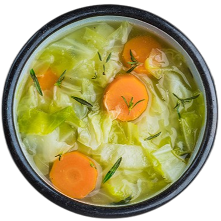 |
|
|
| Tumis Sayur Kangkung | 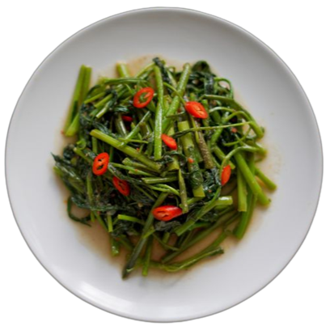 |
|
|
| Salmon Panggang | 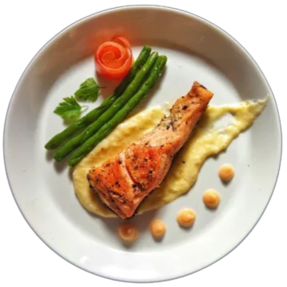 |
|
|
| Nama Makanan | Gambar | Deskripsi |
|---|---|---|
| Bluberi | 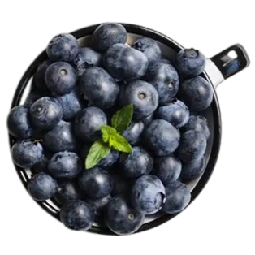 | Bluberi mengandung antioksidan serta rendah sodium, fosfor, dan kalium. Sehingga cocok untuk pasien pengidap CKD. |
| Kubis | 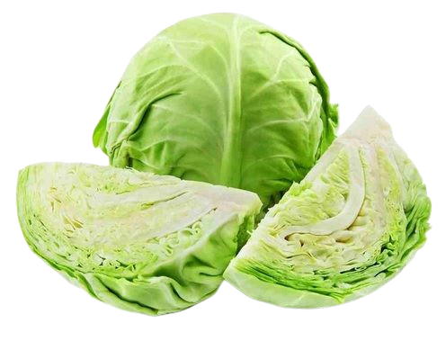 | Kubis baik dikomsumsi bagi pengidap CKD karena kol kaya akan vitamin, mineral, dan kubis menyediakan serat yang tidak larut. |
| Minyak Zaitun | 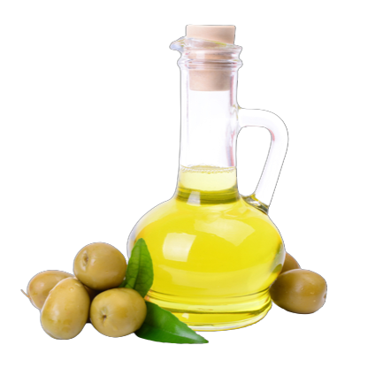 | Sebagai sumber lemak dan bebas fosfor, minyak zaitun menjadi bahan makanan yang menyehatkan ginjal. |
| Paprika | 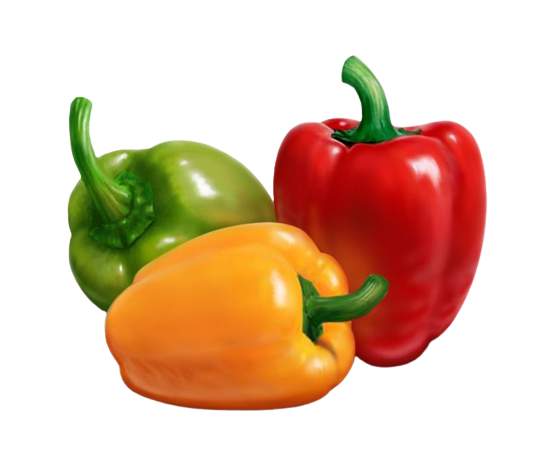 | Paprika termasuk sayuran tinggi antioksidan serta rendah kalium, fosfor, dan natrium. Sehingga baik untuk kesehatan ginjal. |
| Nama Makanan | Gambar | Deskripsi |
|---|---|---|
| Makanan Kaleng | 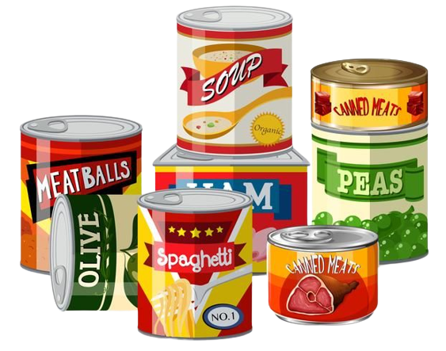 | Sebagian besar makanan kaleng tinggi natrium, serta kandungan pengawet tidak baik bagi tubuh. |
| Pisang | 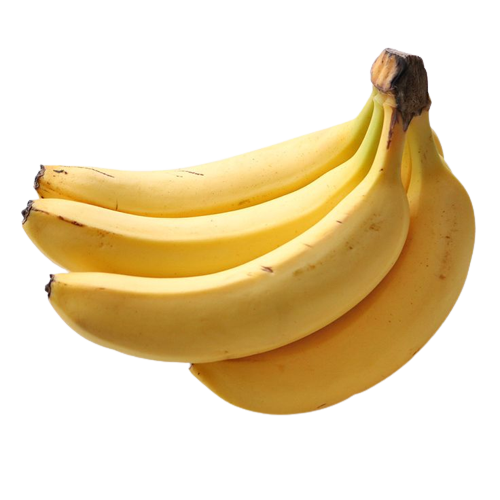 | Pisang mengandung zat kalium yang tinggi, sehingga termasuk makanan yang tidak dianjurkan. |
| Produk Susu | 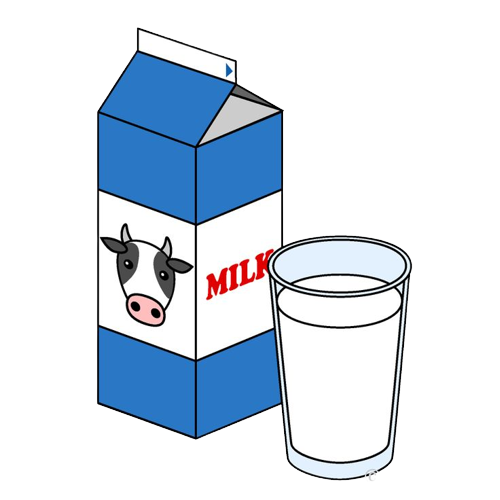 | Produk susu memiliki kandungan fosfat yang tinggi sehingga termasuk makanan yang tidak dianjurkan. |
| Nasi Merah | 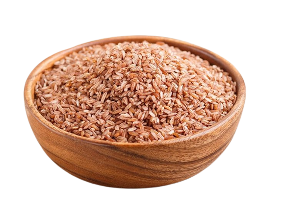 | Nasi merah tidak dianjurkan karena memiliki kandungan kalium dan fosfor yang lebih tinggi dari pada nasi putih. |
Bagi penderita Chronic Kidney Disease (CKD), mengikuti pola makan yang tepat sangat penting untuk menjaga kesehatan ginjal. Berikut adalah beberapa tips yang dapat membantu:
Reduksi asupan protein, terutama protein hewani, dapat membantu mengurangi beban kerja ginjal. Pilih sumber protein nabati seperti kacang-kacangan, biji-bijian, dan tahu.
Mengurangi konsumsi garam membantu mengontrol tekanan darah dan mencegah retensi cairan. Hindari makanan olahan dan makanan cepat saji yang tinggi sodium.
Batasi makanan tinggi kalium seperti pisang dan tomat. Kontrol asupan kalium membantu mencegah hiperkalemia yang dapat terjadi pada penderita CKD.
Pantau asupan cairan untuk menghindari retensi cairan. Minumlah sejumlah yang cukup, tetapi disesuaikan dengan anjuran dokter sesuai kondisi kesehatan individu.
Di tahap lanjut CKD, batasi asupan fosfor. Hindari makanan tinggi fosfor seperti produk susu, karena tingginya fosfor dapat merugikan ginjal.
Jika memiliki diabetes, kendalikan gula darah secara ketat. Mengikuti rencana makan yang sesuai akan membantu menjaga keseimbangan gula darah.
Jl. H. sulhan
Jebol Mayong Jepara.
alfinayani931@gmail.com
085727141432